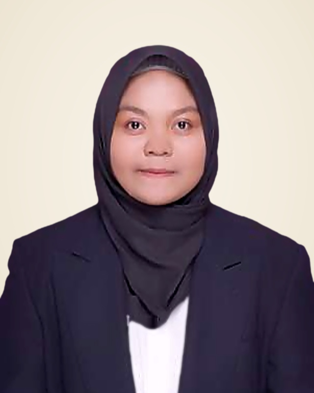
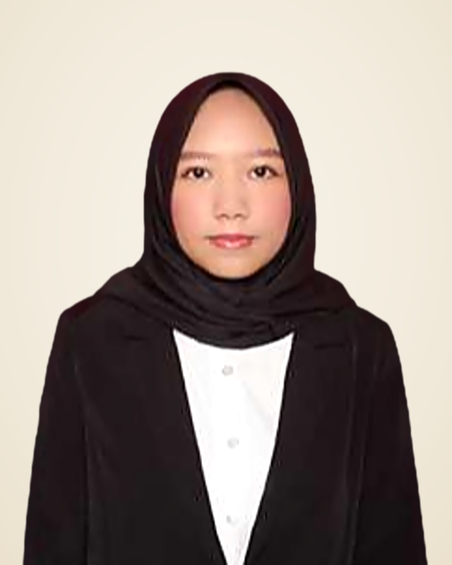
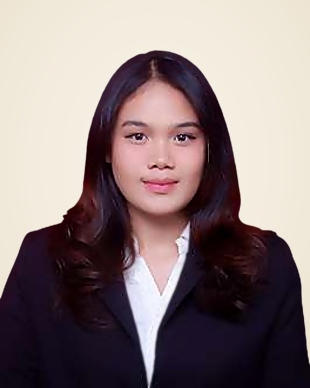

Advokat
Dr. Tommy Aditia Sinulingga, S.H., M.H., CTL, C.Med.
Pendiri & Managing Partner · Doktor Ilmu Hukum (Magna Cumlaude), Dosen Tetap FH USU, Advokat, Kuasa Hukum Pajak (CTL) & Mediator Tersertifikasi
Kekuatan multidisiplin lengkap Tommy Sinulingga Law Firm: 10 Advokat Litigasi Berlisensi yang dipimpin Managing Partner Dr. Tommy Aditia Sinulingga, S.H., M.H., CTL, C.Med., 6 Profesor & Doktor Ilmu Hukum pada Dewan Pakar Akademik, serta 9 Spesialis Non-Litigasi, Mediasi & Kontrak Tersertifikasi.
Pendiri & Managing Partner · Doktor Ilmu Hukum (Magna Cumlaude), Dosen Tetap FH USU, Advokat, Kuasa Hukum Pajak (CTL) & Mediator Tersertifikasi
Senior Partner · Advokat & Perancang Kontrak Tersertifikasi (CCD.)
Partner · Advokat Litigasi & Pembelaan Pidana

Advokat & Konsultan Hukum · Hukum Korporasi & Litigasi
Advokat & Konsultan Hukum · Litigasi & Perancangan Kontrak
Partner · Advokat Hukum Perdata, Kenotariatan & Agraria
Partner · Advokat Litigasi & Penyelesaian Sengketa
Associate Partner · Advokat Litigasi & Hukum Pidana
Associate Partner · Advokat & Perancang Kontrak Tersertifikasi (CCD.)
Associate Partner · Advokat Litigasi & Pendampingan Lapangan
Ahli Hukum Penanaman Modal, Pasar Modal dan Kontrak Bisnis
Ahli Hukum Internasional, Hukum Perdata Internasional, Penanaman Modal Asing
Ahli Hukum Pidana
Ahli Hukum Penanaman Modal, Pasar Modal dan Kontrak Bisnis
Ahli Hukum Lingkungan, Internasional, dan Kekayaan Intelektual
Ahli Hukum Lingkungan
Spesialis Uji Tuntas Hukum (Due Diligence) & Non-Litigasi
Spesialis Konsultasi Korporasi & Non-Litigasi
Spesialis Kepatuhan Regulasi & Non-Litigasi

Spesialis Riset Kontrak & Non-Litigasi
Spesialis Pendampingan Hukum & Non-Litigasi

Spesialis Hukum Niaga & Non-Litigasi
Spesialis Kepatuhan Perusahaan & Non-Litigasi
Spesialis Pengadaan & Auditor Hukum Tersertifikasi (CPLA.)
Perancang Kontrak, Mediator & Negosiator Tersertifikasi (CCD., C.Med., C.Neg.)
Tidak Ada Anggota Tim yang Cocok dengan Pencarian Anda
Coba gunakan kata kunci nama, gelar akademik (Prof., Dr., M.H., M.Kn., CTL, CCD., C.Med.), atau bidang keahlian hukum lainnya.
Baca kisah perjalanan hidup lengkap, rekam jejak akademik hingga Doktor Ilmu Hukum (Magna Cumlaude), dan 3 buku referensi Managing Partner kami, atau hubungi langsung Kantor Pusat Medan dan Cabang Jakarta.